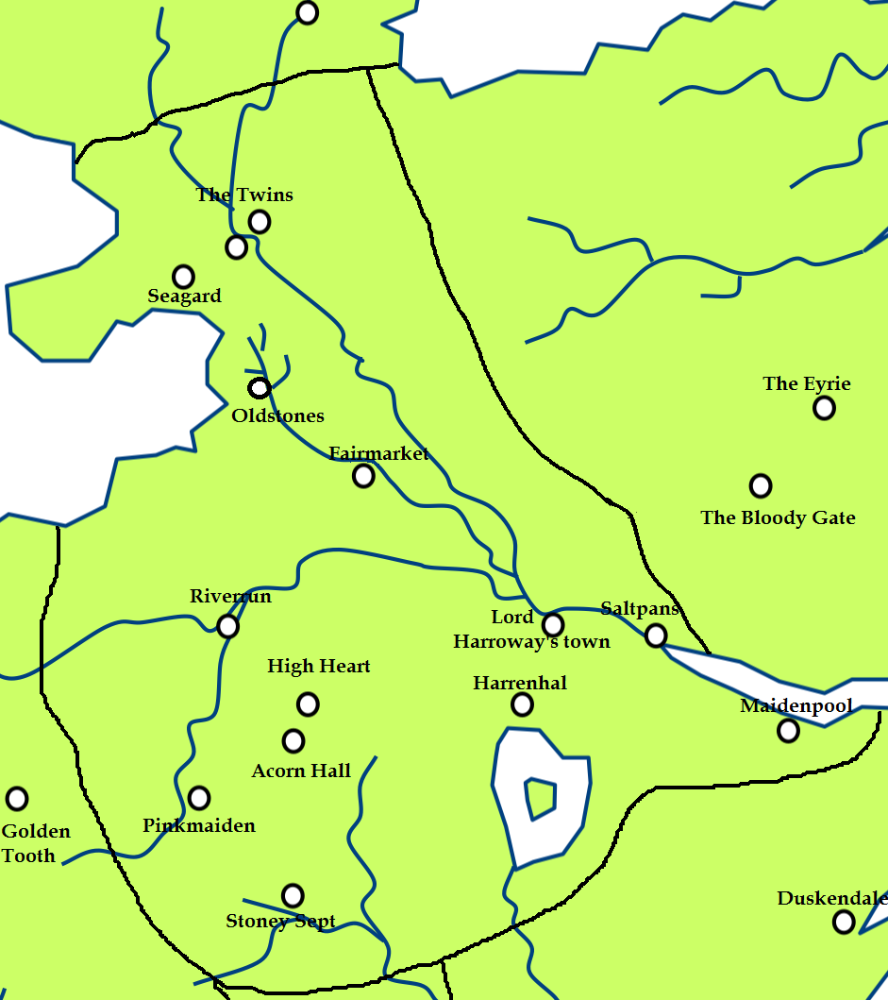

The Trident ( Trident )
The Trident is a major river in the riverlands of the Seven Kingdoms. Made of numerous smaller tributaries, it is one of the largest rivers on the continent of Westeros. It is a confluence of three main forks: the Red, the Green and the Blue, which join west of Lord Harroway’s Town and the crossroads and eventually flow into the Bay of Crabs. Saltpans and the Quiet Isle are located at the mouth of the Trident.
In peacetime, the forks of the Trident are the easiest way to move goods and men across the riverlands, and they can be filled with poleboats. The ruby ford and the Twins are two of the major crossings over the rivers. The rivers are effective barriers during wartime.
The forks of the Trident are represented in the arms of Houses Shawney and Strong, and the river kings from House Teague used a trident in their sigil.
